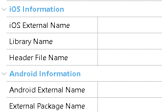

An External Object is used to extend some feature not provided by default in GeneXus. Using native platform tools you can develop the desired feature and expose it in GeneXus with an External Object. The implementation of an External Object for Smart Devices can be used to solve any combination of the following:
For Smart Devices execution of an External Object, the appropriate implementations must be provided. In the case of an External Object that will be called from offline generated code, the following properties section are needed  The implementation also changes depending on the target platform; check the following links: External Object for Android ConsiderationsInOut parameters are not supported, all parameters are considered as In. To return more than one value use a SDT object. |